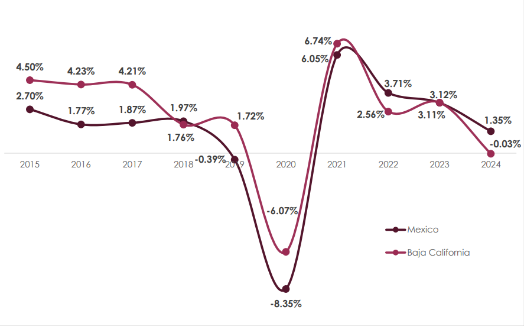
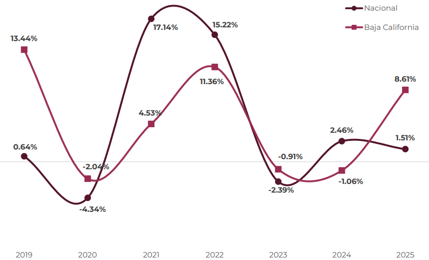

Resultados de la Encuesta Nacional de Seguridad Pública Urbana (ENSU) 4to. Trimestre 2025
Analysis of public perceptions of public safety, government performance, and institutional trust in Baja California.
View PDFResultados de la Encuesta Nacional de Seguridad Pública Urbana (ENSU) 3er. Trimestre 2025
Analysis of public perceptions of public safety, government performance, and institutional trust in Baja California.
View PDFInformación Turística del Sistema Nacional de Información Estadística del Sector Turismo de México (DATATUR) e INEGI
Technical analysis of tourism activity in Baja California, including hotel occupancy, cruise arrivals, airport passenger flows, and employment trends in the restaurant and accommodation sector.
View PDFAnálisis de la Dinámica del Mercado Laboral Formal en Baja California en el Periodo de Enero de 2025 a Marzo de 2026
Technical analysis of formal employment dynamics in Baja California, based on IMSS-registered workers, monthly employment trends, seasonal contractions, and recovery patterns from January 2025 to March 2026.
View PDF
Análisis del Comportamiento de la Economía de México y Baja California en el Periodo de 2014 a 2024
Analysis of economic growth in Mexico and Baja California, examining GDP trends, historical growth rates, and the economic impact and recovery following the COVID-19 pandemic from 2014 to 2024.
View PDFAnálisis de Cobertura de Servicios de Carácter Hídrico en el Estado de Baja California durante el Periodo 2019 a 2025
Analysis of water and sanitation service coverage in Baja California, examining trends in drinking water and sewerage access and comparing municipal performance to identify infrastructure progress and gaps from 2019 to 2025.
View PDF
Población con ingreso laboral inferior al costo de la canasta alimentaria (pobreza laboral) al 4to trimestre de 2025
Analysis of labor poverty in Baja California, examining the share of the population with labor income below the food basket cost, historical trends, and the state’s performance compared with the national average and other Mexican states in Q4 2025.
View PDF
Población con ingreso laboral inferior al costo de la canasta alimentaria (pobreza laboral) al 2do trimestre de 2025
Analysis of labor poverty in Baja California, examining the population with labor income below the food basket cost, historical trends from 2005 to 2025, and the state’s performance compared with the national average.
View PDFResultados de la Encuesta Nacional de Ingresos y Gastos de los Hogares (ENIGH) 2024
Analysis of household income and expenditure in Baja California using ENIGH 2024 data, examining income sources, spending patterns, and socioeconomic gaps across rural and urban households, gender, and education levels.
View PDF
Comportamiento del Valor de la Producción Manufacturera Nacional y de Baja California en el Periodo 2018-2025
Comparative analysis of manufacturing production in Mexico and Baja California, examining growth rates, contraction and recovery cycles, and economic divergences in the sector from 2018 to 2025.
View PDFAnalisis de asegurados al IMSS en Baja California y comparativa a nivel nacional
Analysis of formal employment in Baja California, examining IMSS-registered workers, monthly employment trends, and cumulative growth rates, with a comparative assessment against other Mexican states from January to October 2025.
View PDFAnálisis de la Encuesta Nacional de Seguridad Pública Urbana (ENSU) 4to. Trimestre 2025 sobre Percepción del Desempeño del Gobierno Municipal
Analysis of urban public safety and government performance in Mexicali and Tijuana, examining citizens’ perceptions of local infrastructure, crime, mobility, public services, and municipal effectiveness compared with the national average in Q4 2025.
View PDF